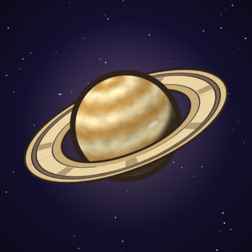
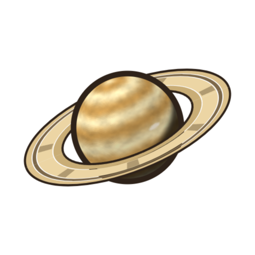

Abertura do app
Rascunho: o que aparece entre tocar no ícone e o menu. As duas primeiras telas são a abertura que o Android desenha sozinho (fundo e ícone do manifest; dá para trocar só o ícone). A terceira é uma abertura do próprio jogo, que pinta logo de cara e se desfaz no menu quando o jogo fica pronto.
1 · Hoje

2048 AstrosO ícone quadrado, com céu e estrelas próprios, solto no meio do fundo: o "quadradinho".
2 · Ícone sem fundo

2048 AstrosSó Saturno, flutuando no escuro. O ícone da tela inicial continua com fundo (o Android usa o "mascarável" para ele).
3 · Abertura do jogo
2048ASTROS
Céu andando, Saturno entrando, o logo e a escada acendendo como barra de progresso. Quando o jogo fica pronto (aqui, depois de 3,5 s), ela some e aparece o menu.